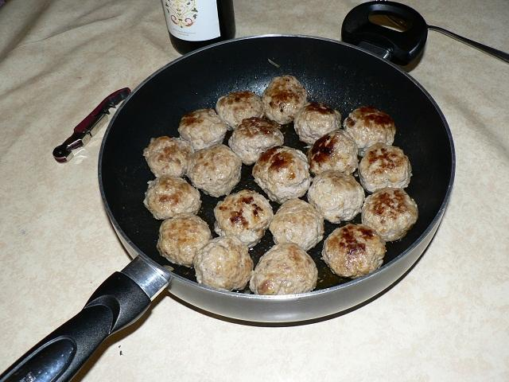

Boulettes maison
Ingrédients pour 10 boulettes
- 350 g de viande de veau maigre
- 150 g de lard non-salé
- 1 oignon
- 2 gousses d'ail
- 2 tranches de pain de mie
- 1 œuf
- sel, poivre, cumin
Préparation

- Couper la viande, bien mélanger et hacher
- Saler très légèrement, ajouter poivre et cumin
- Hacher l'oignon avec l'ail et l'incorporer à la viande
- Battre l'œuf dans un récipient
- Ajouter dans l'œuf le pain de mie haché
- Incorporer dans la viande hachée et rectifier l'assaisonnement
- Rouler les boulettes et cuire à la poêle